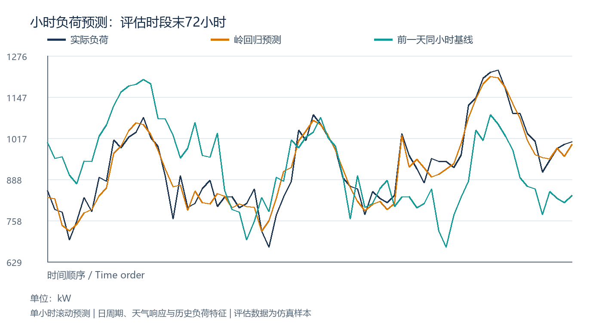

01 / ENERGY FORECASTING
园区小时负荷预测
根据日历、温度响应和历史负荷预测下一小时用电需求，评估模型相对前一天同小时基线的误差变化。
实现内容
- 180 天、4,320 条小时记录；24 / 168 小时滞后负荷与周期特征。
- 仅用训练样本确定标准化参数，NumPy 求解 L2 正则化回归。
- 3,432 条训练记录，最后 720 条作为独立评估数据。
| 指标 | 岭回归 | 基线 |
|---|---|---|
| MAE / kW | 30.11 | 79.32 |
| RMSE / kW | 37.40 | 102.48 |
| MAPE | 3.08% | 8.21% |
温度作为外生输入；协议允许使用此前已观测负荷。多步日前预测需重新定义输入。

查看岭回归核心计算
penalty = np.eye(X_train.shape[1])
penalty[0, 0] = 0
coef = np.linalg.solve(
X_train.T @ X_train + alpha * penalty,
X_train.T @ train.load_kW.to_numpy()
)
pred = X_test @ coef